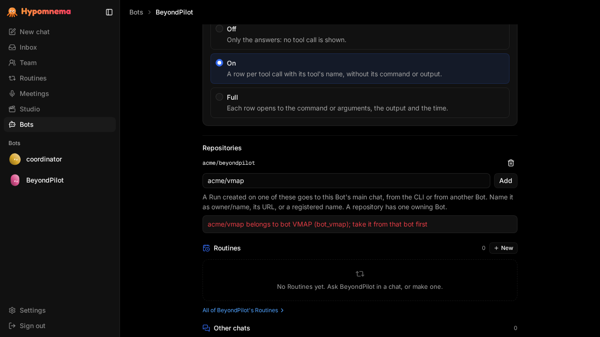
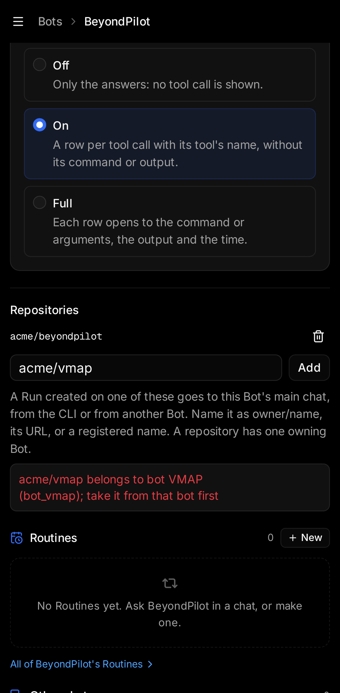
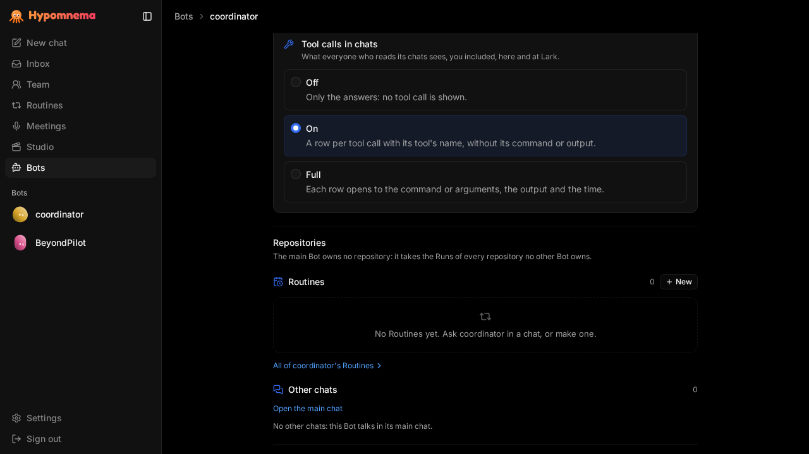
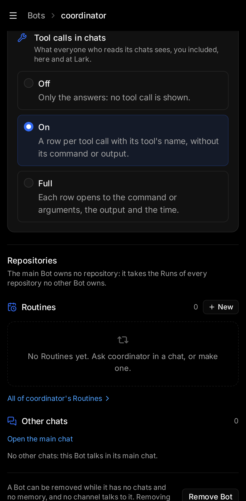
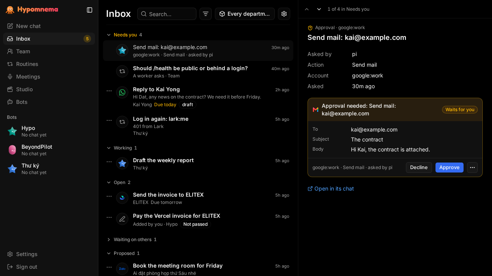
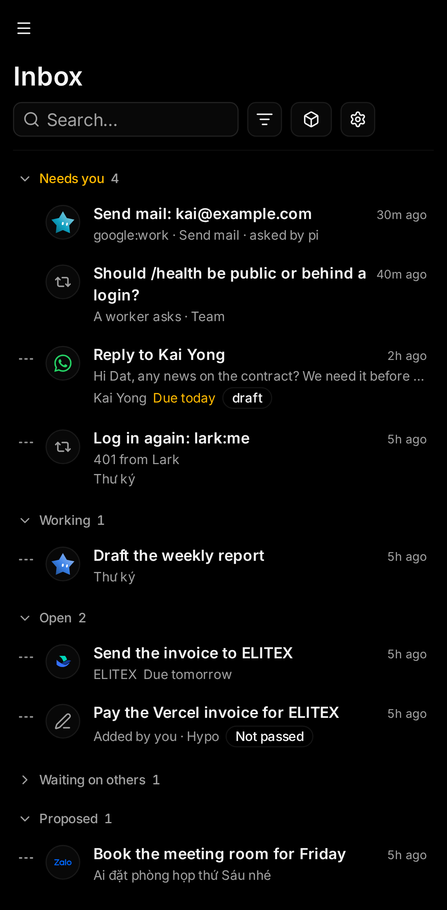
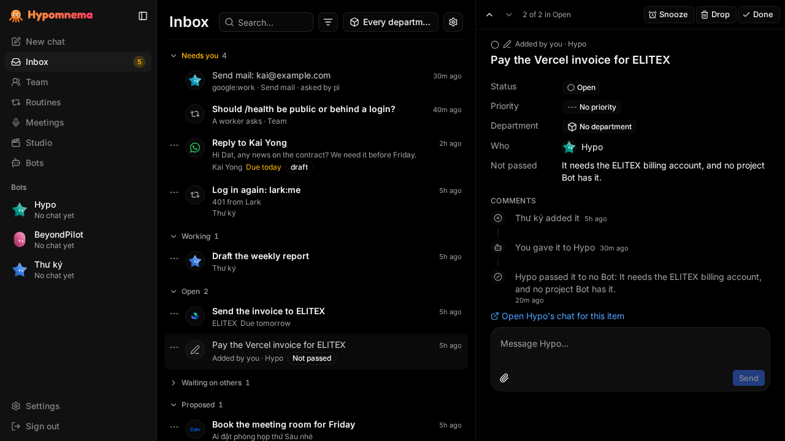
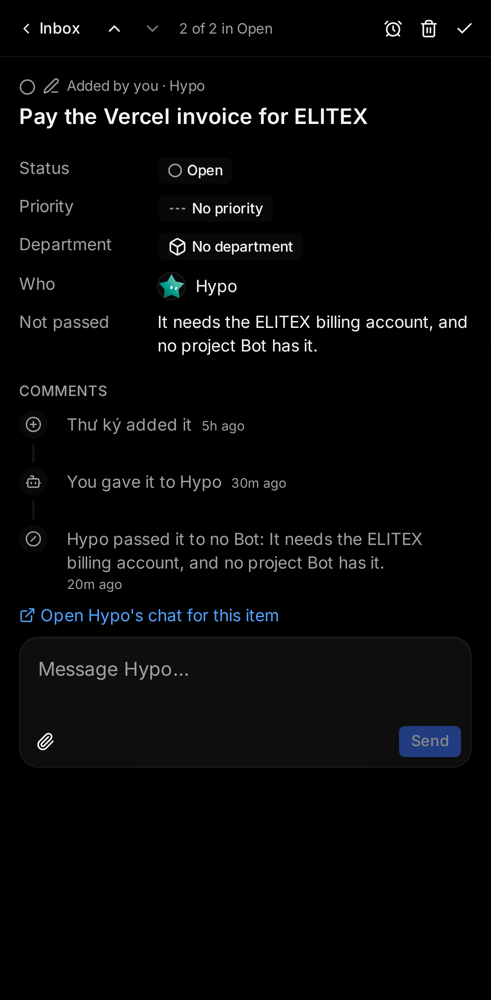

Runs go to the Bot that owns the repository (#1334)
Taken by web/tests/bots.spec.ts ("a Bot owns repositories set on its page, and a taken one is
refused") and web/tests/inbox.spec.ts ("a to-do the main Bot passed to no Bot shows Not passed with
its reason"), against the specs' fake client API, dark theme.
The BeyondPilot Bot's Repositories, with acme/beyondpilot added and a claim on acme/vmap, another Bot's, refused


The main Bot's page: it owns no repository


The Inbox list: Hypo's to-do marked Not passed (the reason on hover)


The to-do's detail: the Not passed field and the thread line with Hypo's reason

